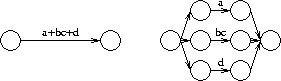
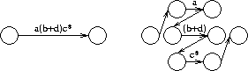
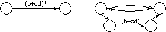

When the converter starts up, all that appears initially are two states (one initial and one final) with a transition. The transition between them contains the regular expression that we are trying to convert.
The critical idea of the converter is that at each stage of the conversion one has a valid machine where some transitions may happen to be regular expressions. Each regular expression may be recursively broken into smaller parts. The conversion is finished when the only transitions have only single (or zero) alphabet symbols on them.
There are four types of reductions that can be done on a regular expression:
 Transitions are first broken according to the or symbol (+). For example, the expression a+bc+d can be broken into three subexpressions a, bc and d. An example of such a breakup is shown above.

Transitions that cannot be broken across
 If
the transition does not break across either concatenation or
Lastly, if a regular expression is of the form (...), then the parentheses are simply removed from the transition.
At any time, the user may press "Do Step" to complete the current RE reduction; if no RE reduction is in progress, this will choose a transition that remains to be reduced, and reduce it. "Do All" will complete the building of the automaton.
When the automaton is fully built, as with similar conversion operations the user has the option of placing the NFA in its own window with the "Export" button.